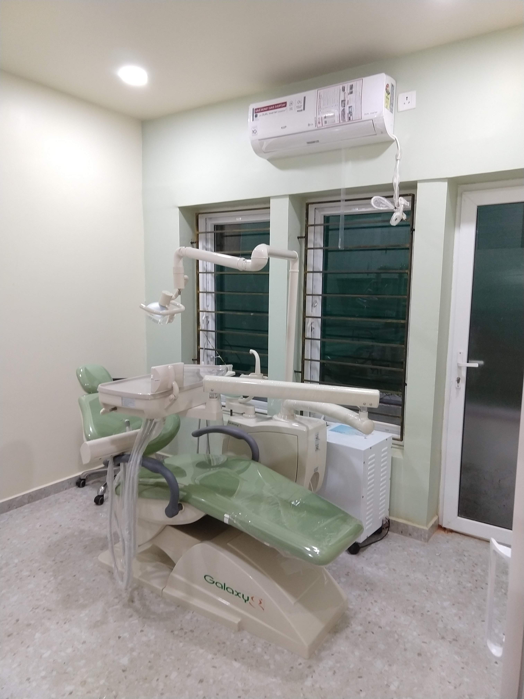
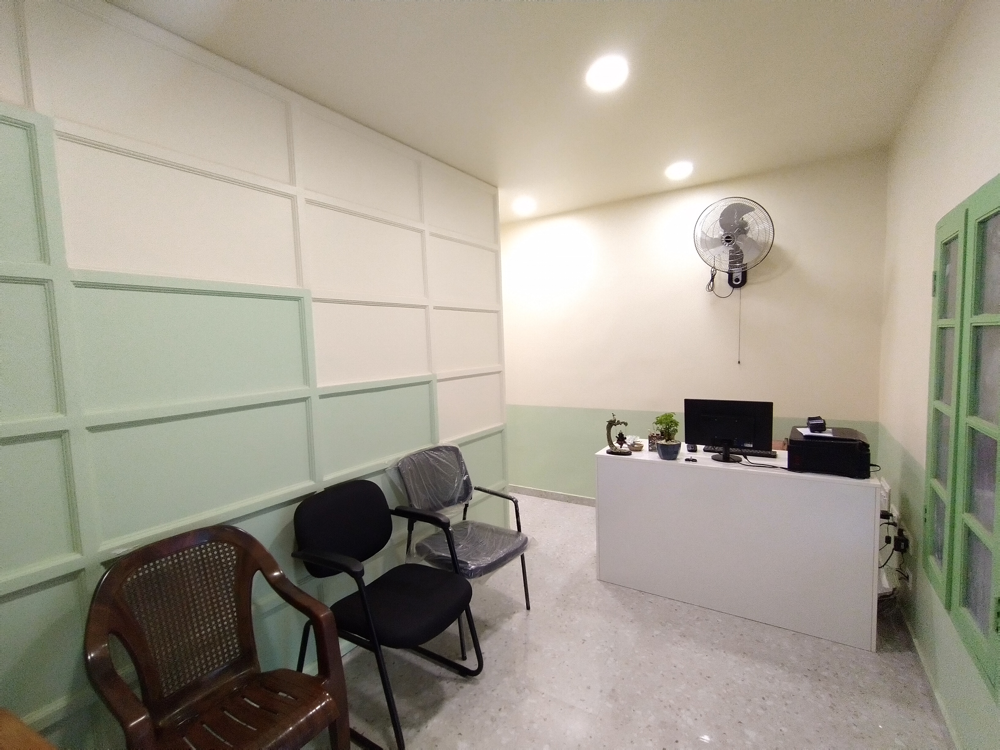

Honest Walkthroughs
Before touching a tooth, we explain what is happening, why a treatment is recommended, and any conservative alternatives available.

After completing her Bachelor of Dental Surgery at Ragas Dental College & Hospital, Chennai in 2012, Dr. Sowmya S. has spent over a decade refining gentle restorative, aesthetic, and surgical techniques. Her practice focuses on general dentistry, conservative smile designing, teeth gap closures, and dental implantology.
Many patients arrive feeling nervous from previous dental experiences or overwhelmed by conflicting advice elsewhere. Dr. Sowmya believes clarity removes fear—taking time at every appointment to walk through X-rays, diagnoses, and realistic options without pressure.
Before touching a tooth, we explain what is happening, why a treatment is recommended, and any conservative alternatives available.
Soft sage tones, cane seating, warm lighting, and greenery at our entrance replace cold hospital anxiety with serene comfort.
Care does not stop when you step out of the chair. Our team checks in thoughtfully through your recovery and alignment milestones.
A calm, thoughtful layout built around patient privacy, warm acoustics, and spotless clinical hygiene at Cenotaph 2nd Lane.

Easily recognizable illuminated fascia framed by warm terracotta walls and lush potted greenery off Cenotaph 2nd Lane.

Woven cane chairs, sage paneling, framed patient appreciation notes, and unhurried check-in greeting every visitor.

Spacious terrazzo-floored suite combining an ergonomic sage dental chair, one-on-one consultation table, and curtained rest bay.

A secondary quiet treatment room equipped with an ergonomic Galaxy sage dental unit and dedicated overhead illumination for focused procedures.

Private intake desk and quiet seating area welcoming family members and caregivers accompanying patients during longer visits.